| 日付 | 2021年10月2日（土） - 2021年10月3日（日） | ||||
|---|---|---|---|---|---|
| 山域 | 東北の山 | ||||
| メンバー | 家族（妻、長女・10歳、長男・8歳） | ||||
| 山行形態 | 子連れ日帰り | ||||
| アクセス | 車 | ||||
| ルート (Map2) |
|
2日目
5時半起床。まだ夜明け前だ。
本日は行程が長く、家までの帰路も長いので、早めの行動だ。
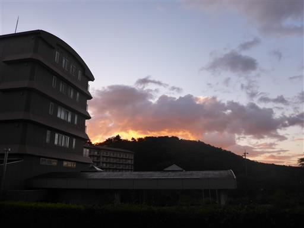
6時半にキャンプ場を出発し、野地温泉前の駐車場に車を停める。標高1180m。
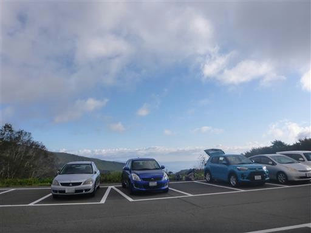
野地温泉ホテルのすぐ横が登山道入口だ。
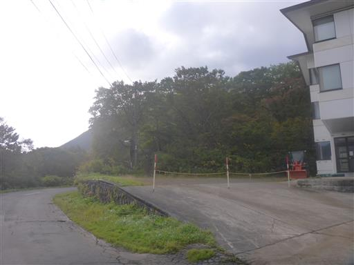
準備を整えて登山開始。先日の台風の影響か、地面は湿っている。
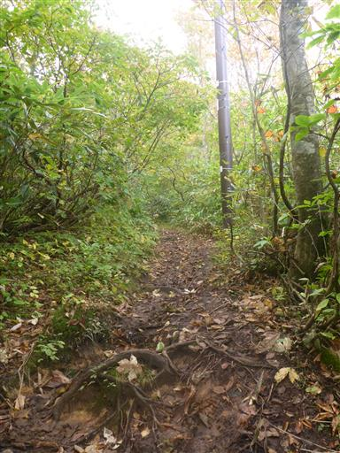
木橋に穴が開いている。ズボッといきそうで怖い。
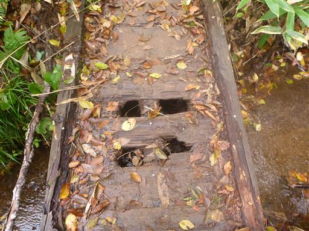
周囲は美しいブナ林。
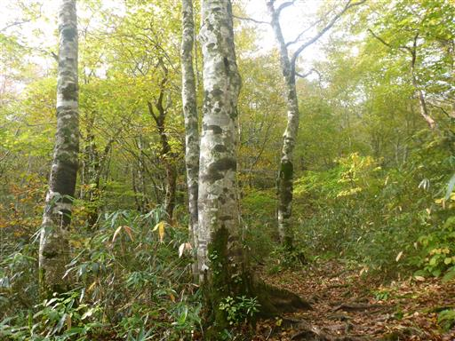
平地に出て展望が広がる。目の前に見えるのは鬼面山。
快晴を予想していたのだが、残念ながら本日は朝から雲が多めだ。
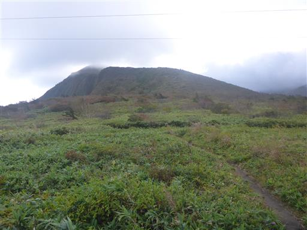
巨大な倒木を潜る。
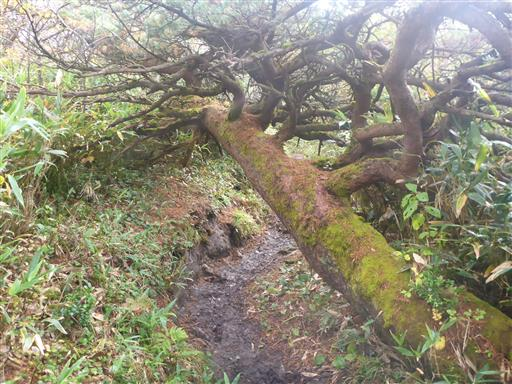
鬼面山山頂に到着。標高1482m。
本日は4つの山に登る予定で、この山が1つ目だ。
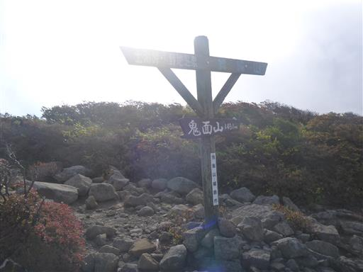
眼下に素晴らしい紅葉の斜面が広がるが、その先の箕輪山は雲の中だ。
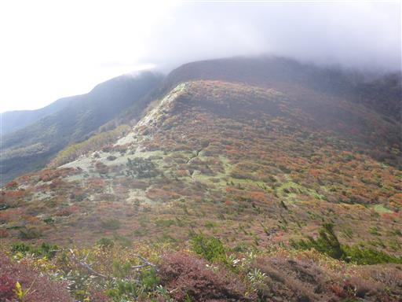
登山道はぬかるみが酷くて、極めて歩きにくい。
一箇所だけではなく、ずっとこのような感じだ。
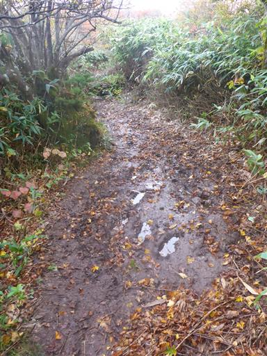
周囲の紅葉を眺めながら歩くが、全貌は見渡せない。
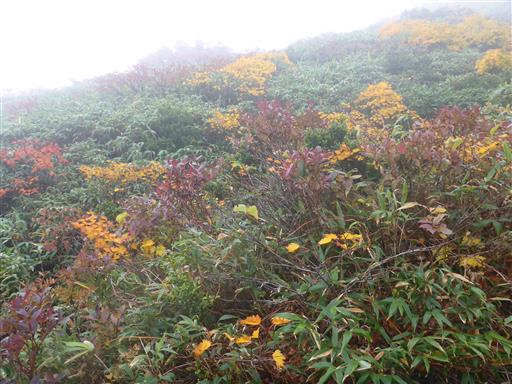
泥んこの平坦道が終わると、今度は滑りやすい傾斜道。
娘は鬼面山から1時間くらいずっと文句を言い続けている。
よくこれだけ文句を言い続けながら歩けるものだと感心する。
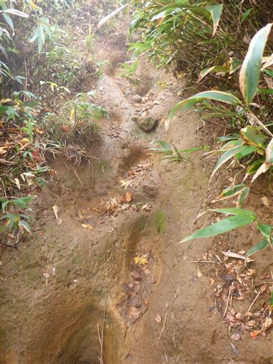
山頂が見えてきた。
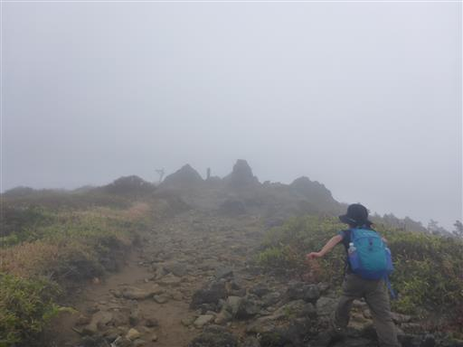
箕輪山に到着。標高1728m。
安達太良連峰の北のはずれにあるマイナーピークだが、ここが安達太良連峰の最高峰だ。
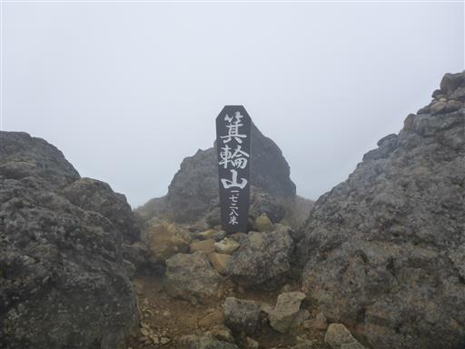
天気が悪いため、諦めて安達太良山方面から引き返してくる人もいたが、
我々は天気が好転することを期待して、安達太良山に向かう。
この先に一体どのような景色が広がっているのか、想像もつかない。
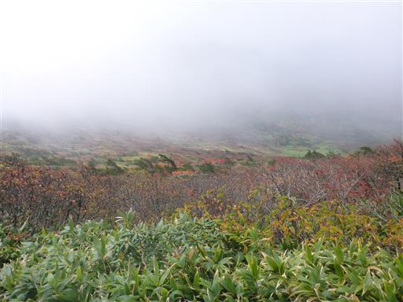
しばらくすると雲が一瞬消えて、先の視界が広がる。
ゆったりとした地形の向こう側に、目指す鉄山が見える。
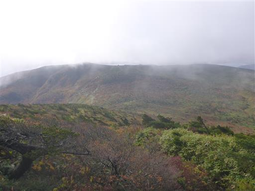
天気は回復傾向のようだ。少しずつ視界が広がっていく。
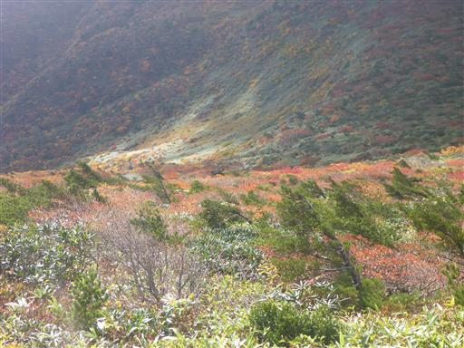
鞍部を越えて鉄山の登りに入る。振り返ると箕輪山を望むことができる。
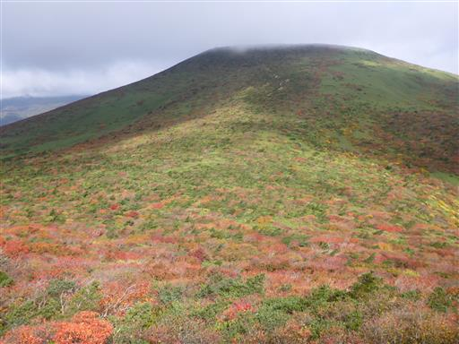
陽が差すと紅葉が光輝く。この景色が見たかった。
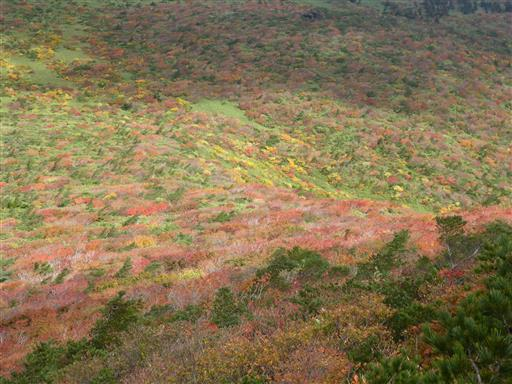
坂を登りきると鉄山はもう間近。正面に鉄山避難小屋が見える。
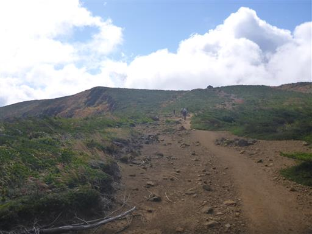
鉄山避難小屋に到着。きれいな小屋だが、トイレはない。
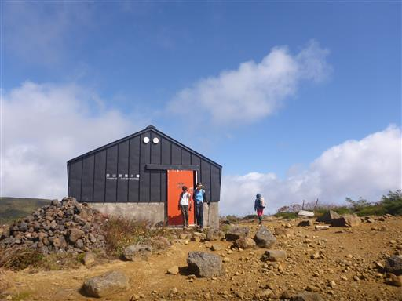
ゆったりした景色から一変、この先は荒々しい景色が広がっている。
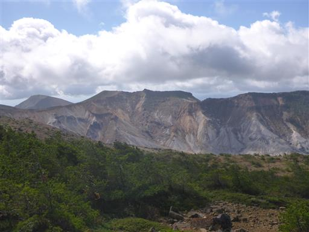
そこから平坦な稜線を歩いて鉄山山頂に到着する。標高1709m。
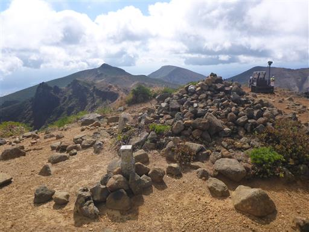
眼前の矢筈森の岩峰は迫力がある。
右奥に見えるピークが最終目的地の安達太良山だ。
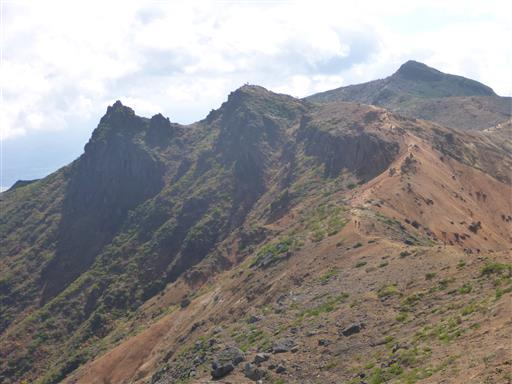
眼下に見えるのは沼の平。
かつての噴火口なのだが、白く染まっていて異様な景観だ。
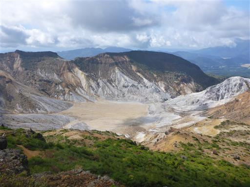
安達太良山に向けて歩を進める。この辺りはあまり紅葉が進んでいない。
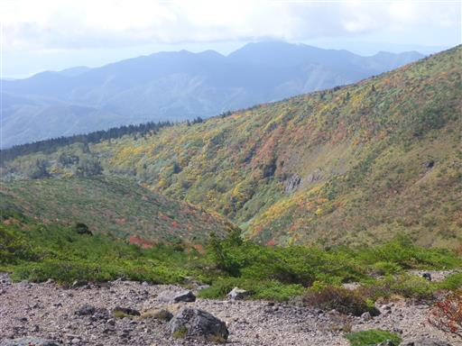
登山者の数が増えてくると、息子はなぜか歩く速度が上がる。
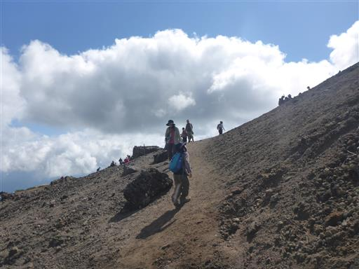
安達太良山山頂に到着。標高1700m。
本当の山頂はこの先の乳首の部分なのだが、大行列ができており
以前来た時は前に進めず酷い目にあったので、今回はパス。
この地点を最終目的地とする。
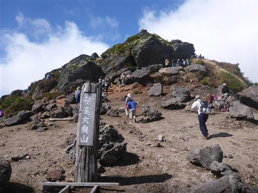
大混雑の安達太良山はさっさと脱出し、矢筈森で昼食をとる。
目の前に聳えるのは鉄山だ。
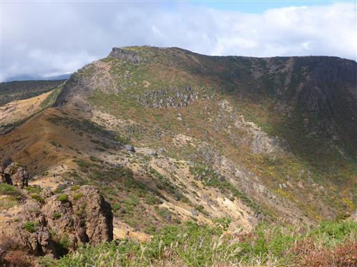
矢筈森を過ぎると登山道はだいぶ静かになる。
これから目の前の鉄山、そして箕輪山、鬼面山を越えて下山する必要がある。
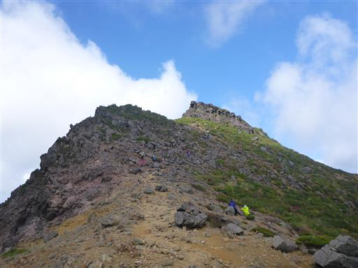
鉄山避難小屋まで戻ってくる。
目の前の箕輪山までは平坦に見えるが、この先、登山道は急降下する。
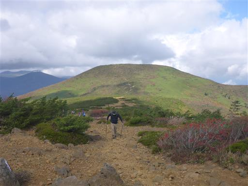
下って登るのは辛いが、その鞍部の紅葉が素晴らしい。
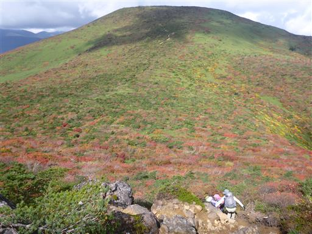
緑のじゅうたんの中に赤い紅葉が点々と見える。
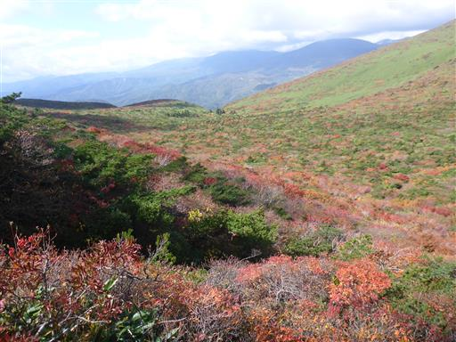
鞍部を過ぎて箕輪山への登りに差し掛かる。
緑の絨毯と、背後に磐梯山が見えている。
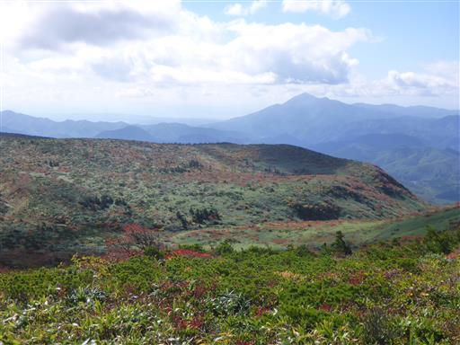
いつの間にか空は真っ青だ。
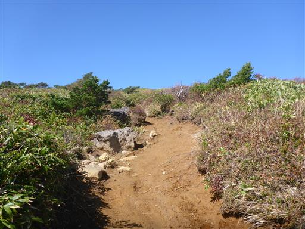
鉄山と箕輪山の間に広がる斜面はとにかく広大だ。
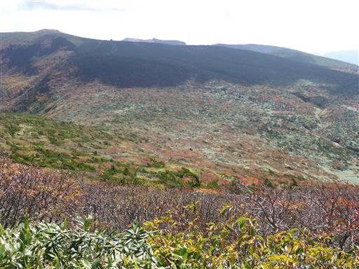
箕輪山山頂に到着する。
往路で来た時とは一転、視界が広がっている。
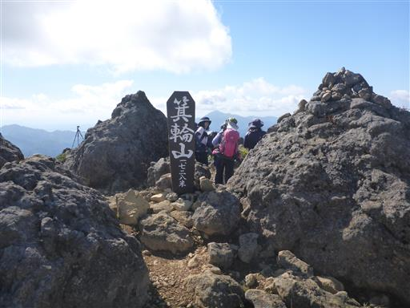
先ほど登った鉄山の紅葉。
ちょっと茶色が多いが、全山紅葉していて美しい。
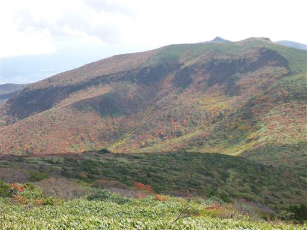
こちらは吾妻連峰。まだ若干雲がかかっているが、ゆったりとした山々を見渡せる。
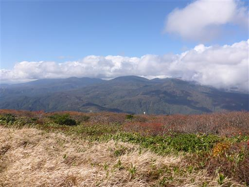
吾妻連峰とは対照的な、鋭角に聳える磐梯山。
右手に見えるのは秋元湖だ。
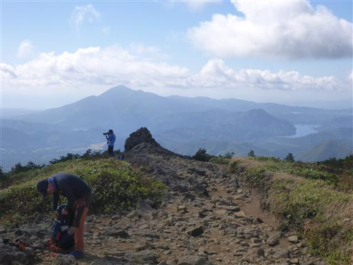
箕輪山でおやつ休憩をとったら下山開始。
登りの時は雲で見えなかったが、箕輪山の北側斜面も真っ赤に染まっている。
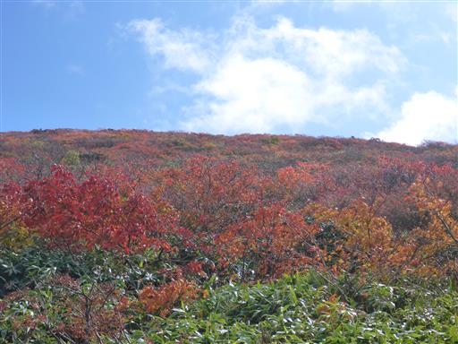
眼下に1つ目のピークの鬼面山が見えてきた。
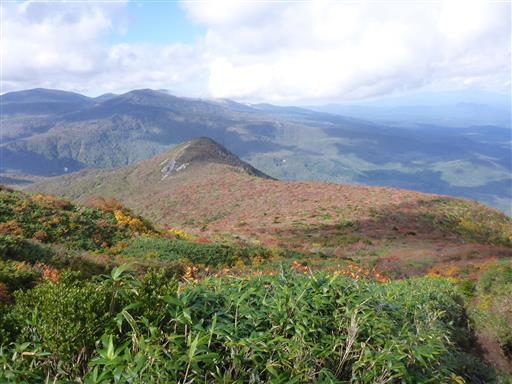
鬼面山に続く平坦な登山道は相変わらず泥だらけだが、
登りの時よりは若干ましになっている気がする。
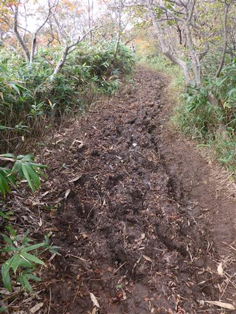
鬼面山に向けて、本日最後の登り。
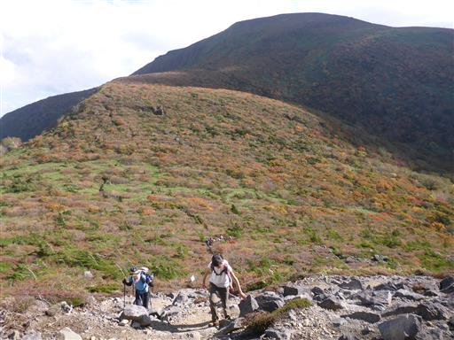
鬼面山山頂に到着する。これで登りはお終いだ。
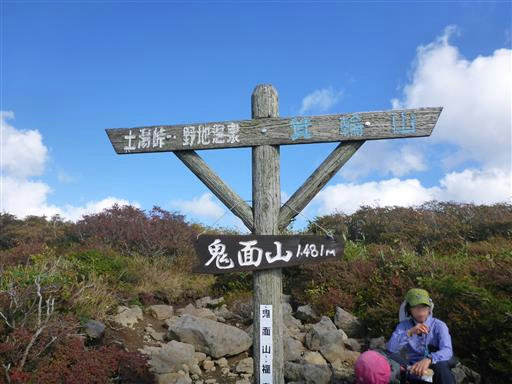
背後に見えるのは鬼面山と箕輪山。
登りの時に楽しめなかった景色を楽しみながら下っていく。
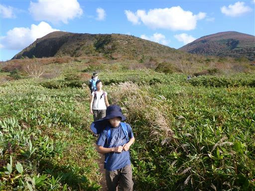
野地温泉に無事下山。
2度目の安達太良山は混雑コースを避けて歩いたため、
素晴らしい景色の中、静かな山行を楽しむことができた。
子供が小さいうちは、一番人の多い最短コースしか歩けなかったが、
今では歩きたいコースを歩けるようになり、子供の成長を感じられた。
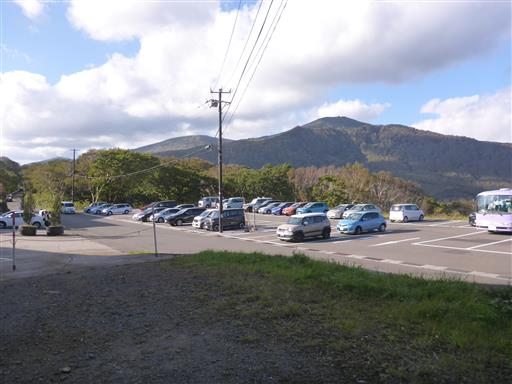